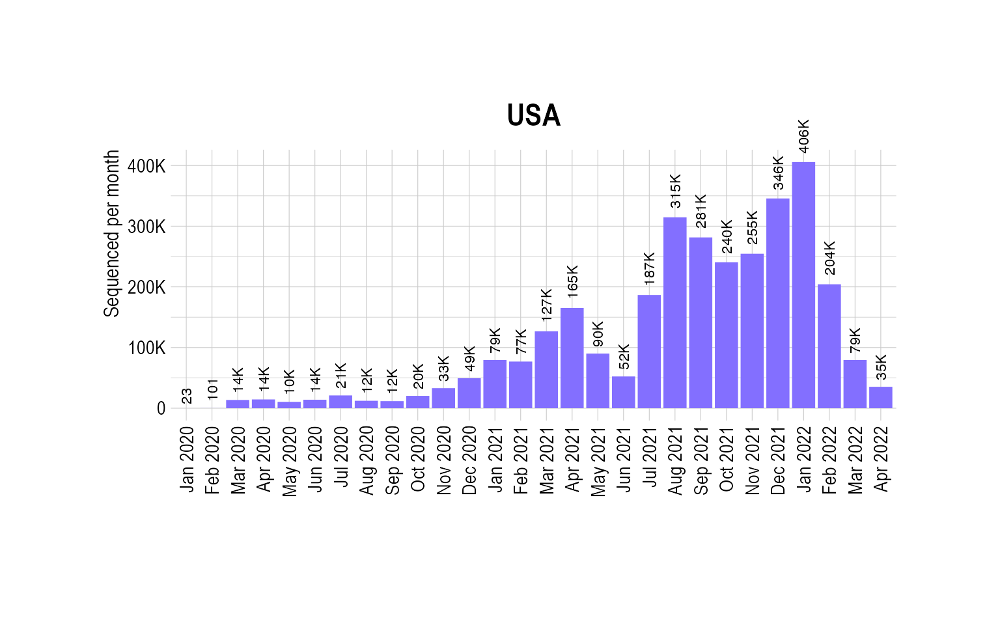
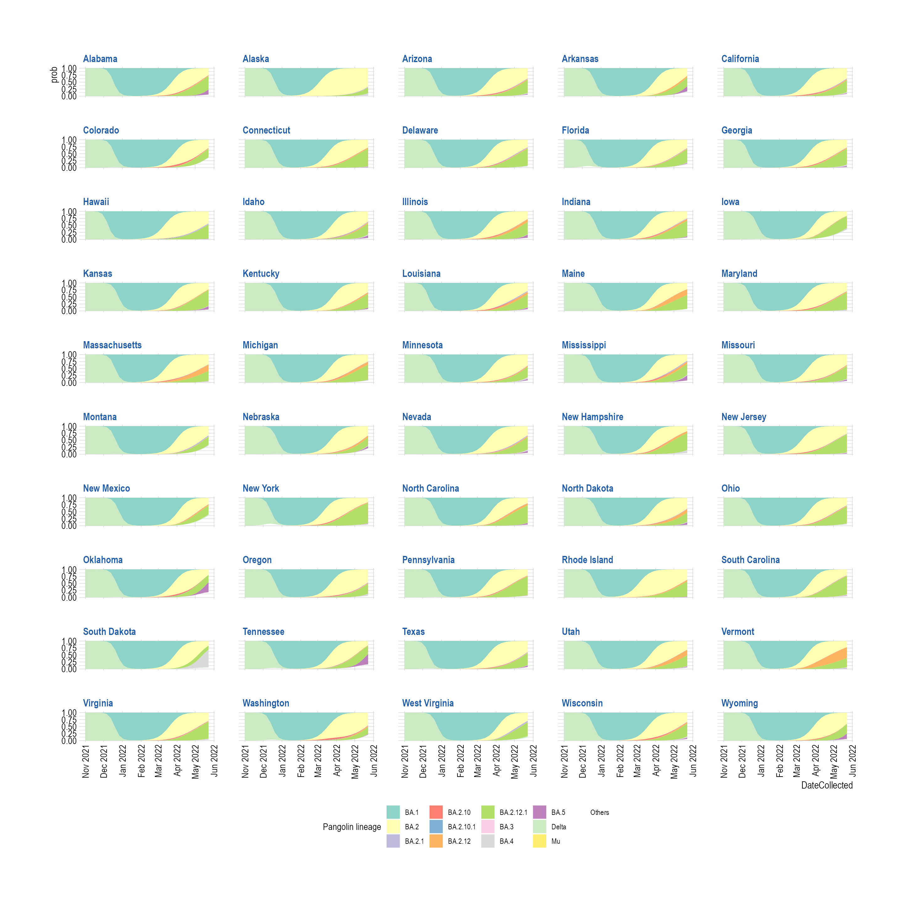

Multinomial modeling - USA
Source:vignettes/MultinomialModeling_USA.Rmd
MultinomialModeling_USA.Rmd
suppressPackageStartupMessages({
library(covmuller)
library(tidyverse)
})
theme_set(CovmullerTheme())Load preprocessed data
We load a qs object created from the metadata tar from
GISAID for faster loading. See the Introduction vignette to see how the object
was created.
date <- "2022_06_04"
gisaid_metadata <- qs::qread(file = paste0("~/github/2021_Covid19_surveillance/data/all_metadata/metadata_tsv_", date, ".qs"))
# filter our sequences from USA
gisaid_usa <- gisaid_metadata %>%
filter(Country == "USA") %>%
filter(Host == "Human")
# format metadata
gisaid_usa <- FormatGISAIDMetadata(gisaid_usa)
gisaid_usa <- gisaid_usa %>% arrange(State, MonthYearCollected)
gisaid_usa$State <- CleanAmericanStates(gisaid_usa$State)
gisaid_usa <- gisaid_usa %>% filter(State %in% datasets::state.name)Plot total sequenced cases
country_seq_stats <- TotalSequencesPerMonthCountrywise(gisaid_usa, rename_country_as_state = TRUE)
p0 <- BarPlot(country_seq_stats, ylabel = "Sequenced per month", color = "slateblue1", label_si = TRUE, xangle = 90, title = "USA")
p0
Get VOCs
vocs <- GetVOCs()
omicron <- vocs[["omicron"]]
vocs[["omicron"]] <- NULL
custom_voc_mapping <- list(
`BA.1.1` = "BA.1.1",
`BA.1` = "BA.1",
`BA.2` = "BA.2",
`BA.2.1` = "BA.2.1",
`BA.2.10` = "BA.2.10",
`BA.2.10.1` = "BA.2.10.1",
`BA.2.12` = "BA.2.12",
`BA.2.12.1` = "BA.2.12.1",
`BA.3` = "BA.3",
`BA.4` = "BA.4",
`BA.5` = "BA.5"
)
gisaid_usa_collapsed <- CollapseLineageToVOCs(
variant_df = gisaid_usa,
vocs = vocs,
custom_voc_mapping = custom_voc_mapping,
summarize = FALSE
)
gisaid_usa_collapsed_sel <- gisaid_usa_collapsed %>%
filter(MonthYearCollected >= "Nov 2021") %>%
filter(lineage_collapsed != "Unassigned")
vocs_to_keep <- table(gisaid_usa_collapsed_sel$lineage_collapsed)
vocs_to_keep <- vocs_to_keep[vocs_to_keep > 20]
gisaid_usa_collapsed_sel <- gisaid_usa_collapsed_sel %>% filter(lineage_collapsed %in% names(vocs_to_keep))
gisaid_usa_shared_dateweek <- SummarizeVariantsDatewise(gisaid_usa_collapsed_sel, by_state = TRUE)
head(gisaid_usa_shared_dateweek)## # A tibble: 6 × 4
## State DateCollectedNumeric lineage_collapsed n
## <chr> <dbl> <chr> <int>
## 1 Alabama 18932 Delta 15
## 2 Alabama 18933 Delta 9
## 3 Alabama 18934 Delta 10
## 4 Alabama 18935 Delta 8
## 5 Alabama 18935 Others 1
## 6 Alabama 18936 Delta 8
fit_usa_multi_predsbystate <- FitMultinomStatewiseDaily(gisaid_usa_shared_dateweek)## # weights: 689 (624 variable)
## initial value 3903291.198147
## iter 10 value 840820.574385
## iter 20 value 606700.455479
## iter 30 value 555141.122918
## iter 40 value 549210.606323
## iter 50 value 533294.126436
## iter 60 value 526215.282749
## iter 70 value 524498.833637
## iter 80 value 522299.138743
## iter 90 value 521169.557460
## iter 100 value 520646.125156
## iter 110 value 520293.292272
## iter 120 value 519912.724728
## iter 130 value 519674.429447
## iter 140 value 519302.712484
## iter 150 value 519062.672248
## iter 160 value 518881.967748
## iter 170 value 518762.076641
## iter 180 value 518600.869995
## iter 190 value 518389.297207
## iter 200 value 518247.100471
## iter 210 value 518094.947463
## iter 220 value 517939.670651
## iter 230 value 517773.704259
## iter 240 value 517664.685256
## iter 250 value 517571.238633
## iter 260 value 517492.382423
## iter 270 value 517396.346191
## iter 280 value 517249.618163
## iter 290 value 517078.372204
## iter 300 value 516897.308171
## iter 310 value 516486.464076
## iter 320 value 515805.613713
## iter 330 value 515474.894436
## iter 340 value 515251.302620
## iter 350 value 514878.241003
## iter 360 value 514133.272232
## iter 370 value 513416.271049
## iter 380 value 513095.557997
## iter 390 value 512962.884430
## iter 400 value 512913.250322
## iter 410 value 512877.245277
## iter 420 value 512846.703672
## iter 430 value 512823.014194
## iter 440 value 512799.181668
## iter 450 value 512792.066030
## iter 460 value 512781.293879
## iter 470 value 512761.581082
## iter 480 value 512744.166315
## iter 490 value 512726.041969
## iter 500 value 512707.226124
## iter 510 value 512700.224454
## iter 520 value 512697.361560
## iter 530 value 512694.917606
## iter 540 value 512691.916047
## iter 550 value 512687.461094
## final value 512686.709087
## converged
head(fit_usa_multi_predsbystate)## lineage_collapsed DateCollectedNumeric State prob SE df
## 1 BA.1 18932 Alabama 1.444632e-05 1.237794e-06 NA
## 2 BA.2 18932 Alabama 2.789927e-11 6.255684e-12 NA
## 3 BA.2.1 18932 Alabama 7.926615e-18 1.529882e-17 NA
## 4 BA.2.10 18932 Alabama 4.299068e-11 1.992215e-11 NA
## 5 BA.2.10.1 18932 Alabama 5.908594e-17 3.387015e-17 NA
## 6 BA.2.12 18932 Alabama 2.490377e-15 2.180751e-15 NA
## asymp.LCL asymp.UCL DateCollected
## 1 1.202029e-05 1.687235e-05 2021-11-01
## 2 1.563835e-11 4.016018e-11 2021-11-01
## 3 -2.205852e-17 3.791175e-17 2021-11-01
## 4 3.943989e-12 8.203738e-11 2021-11-01
## 5 -7.298344e-18 1.254702e-16 2021-11-01
## 6 -1.783816e-15 6.764569e-15 2021-11-01Plot Smooth Muller Plots
muller_usabystate_mfit <- PlotMullerDailyPrevalence(fit_usa_multi_predsbystate, ncol = 5)
muller_usabystate_mfit## Warning in RColorBrewer::brewer.pal(n, pal): n too large, allowed maximum for palette Set3 is 12
## Returning the palette you asked for with that many colors